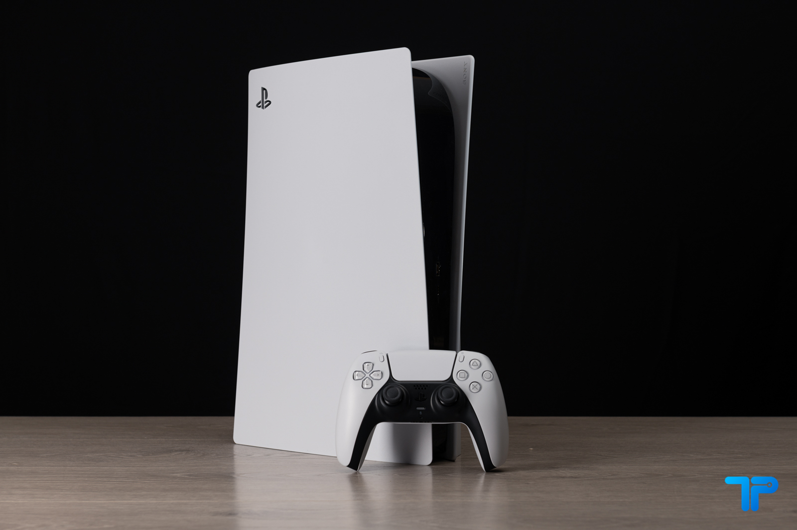
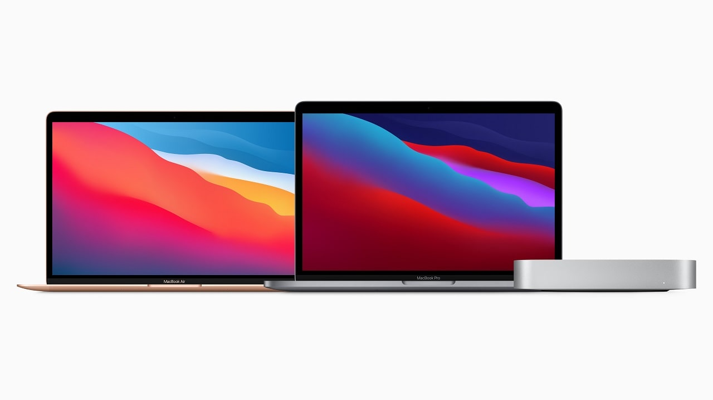

PlayStation 5

La vincitrice (momentanea) di questa nuova edizione della lotta per il mercato delle console di videogame è PlayStation 5 (qui la nostra recensione). Tutti ne hanno parlato in questo 2020, anche chi non prende in mano un controller dai tempi di Super Mario Bros. per la NES. E anche se crediamo che nel lungo periodo la strategia dei servizi online di Microsoft potrebbe essere vincente per Xbox Series X (qui la nostra recensione), in questo 2020 il posto nei migliori prodotti Tech lo prende Sony PlayStation 5.
Macbook

Infatti, il nuovo Macbook Pro con processore Apple M1, oltre a funzionare davvero alla grande, ha convinto molti produttori di software a sviluppare versioni dei loro programmi basati sull’architettura ARM, che fino al 2019 era appannaggio (quasi) esclusivo di Qualcomm. Tra essi troviamo Adobe, che ha lanciato nuove versioni di Lightroom e altri programmi grafici che supportano i nuovi chip Apple M1.
LG CX OLED
Qualità dell’immagine davvero elevata, neri perfetti grazie alla tecnologia OLED e un sistema operativo ottimo per godersi contenuti in streaming, giocare con le console di nuova o vecchia generazione e per qualsiasi altra funzione vi venga in mente.